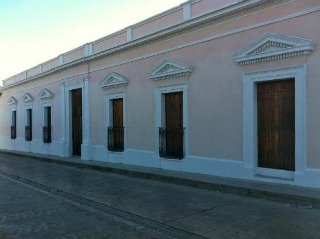
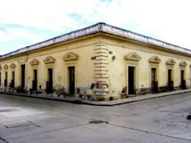
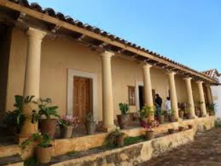
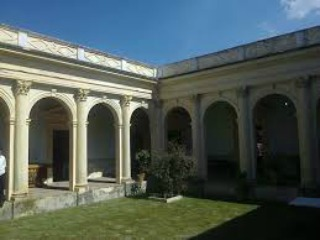
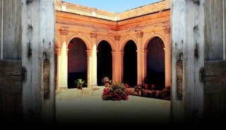

Casa construida por el Ing. Carlos Z. Flores en 1902 y empleada en 1920, que albergo un singular colegio de niñas, con internado, donde podían asistir las jóvenes de zonas alejadas. Es por ello que LA ENSEÑANZA y sus instalaciones es uno de los edificios visto como símbolo por muchos habitantes de la ciudad. En 1919 fue colegio de señoritas, en 1929 se estableció el colegio de niños que funciono hasta noviembre de 1966.
En el 2006 fue adquirida con dinero de la federación y cedida a la asociación cultural Na Bolom A.C. de San Cristóbal de Las Casas y hoy en día está siendo restaurada.
Se encuentra ubicado en la avenida belisario dominguez y calle maria adelina flores.
Si usted se encuentra ubicado en la plaza de la paz viendo de frente hacia la catedral puede caminar hacia su derecha al finalizar la catedral, desplazándose despues a su izquierda pasando entre el costado de la catedral y la plaza 31 de Marzo. Como referencia encontrará la farmacia del ahorro y Frente a este la zapateria pakar entre estos dos lugares encontrará el andador guadalupano, camine una cuadra sobre el andador guadalupano y al llegar a la esquina de vuelta a la izquierda y camine una cuadra sobre la avenida belisario dominguez y al llegar a la esquina usted encontrará el colegio la enseñanza.
Es un lugar histórico que usted puede visitar para conocer su historia, además se pueden hacer un recorrido por todo el colegio.





posicione el mouse sobre las imágenes